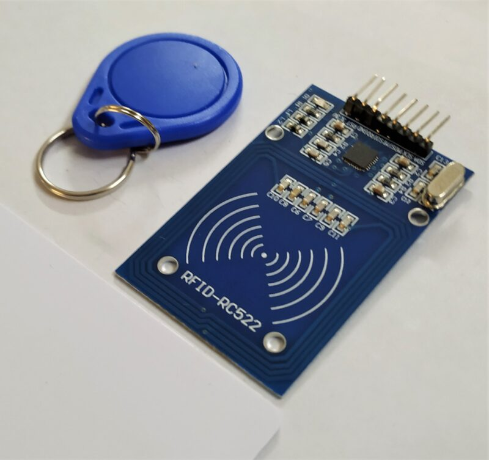

An IoT security lock and alert system

The need for safety has been one of the primary factors behind people’s attempts to build homes of their own. Every house comes with one or more main entrances. The main doors are one of the vital points of security. Having mechanisms or security measures in place to control the access to the house has been proved to provide the aspired safety and security. As every house comes with doors, doors come with locks. In an attempt to ensure security, various kinds of door locks such as mechanical or electronic, have been implemented. Even after using those kinds of locks, the crimes do happen due to the fact that such locks have well-known weak points of their own. Some locks can be picked and others can be disabled in some way. So there is a need to invent other kinds of locks which cannot be easily broken and even if they can be broken, the task won’t be so easy as it is for other kinds of locks. Various control systems have been designed over the years.
The main aim in designing those systems includes –
● Ease of Control: The system should be easy to control for the household owners.
● Durability: The system should be durable enough.
● Security: The system itself should be secure to provide security.
The purpose of this project is to present a secure smart door lock which is intended to offer high security, easy access, and control. Therefore, the proposed system makes use of RFID tags and GSM modules to implement a secure but easy-to-use system. It has the possibility to replace the traditional door lock system. By using the proposed method, the security of the household can be enhanced at a very low cost.
RFID, Radio Frequency Identification is a fundamental and inexpensive technology that enables wireless data transmission. This technology has not been very often used in industry due to lack of standardization among the manufacturing companies earlier. RFID technologies are efficient and secure compare to other network. With RFID, wireless automatic identification takes a very specific form: the object, location, or individual is marked with a unique identifier code contained with an RFID tag, which is in some way attached to or embedded in the target. RFID is not a single product but a comprehensive system, a typical RFID system include three basic elements: RFID tag (transponder), reader (transceiver) and back-end application system (or database), which demands the support of the computer network. The software is used for management, controlling, transaction, operation and maintaining record of the various users. A digital door locking system is also implemented and governed by RFID reader which authenticate and validate the user and open the door automatically. It also keeps the record of check-in and check-out of the user. It’s very important to authenticate the user before entering into a secure space and RFID provide this solution. The system enables user to check-in and check-out under fast, secure and convenient conditions. The system include door locking system which open when the user put their tag in contact with reader and the user information matched with the information already stored in database. The RFID controls the opening and closing of the door. In this study we utilize RFID technology to provide solution for secure access of a space while keeping record of the user. We used passive type of RFID here. The passive types of RFID are battery-less and they obtain power to operate from reader. The major advantages of passive RFID are its cost effective and small in size. Due to above advantages, it is widely use by inventory tracking technology. Current antenna technology makes it possible to smaller in size.
FACILITIES REQUIRED
Hardware components required
● I2C LCD
● Arduino UNO
● MFRC522 RFID Reader
● Tags
● SIM900 GSM module
● 5V, 2A power adapter
● SG90 Micro-servo motor
● 4X4 Keypad
● Resistor 221 ohm
● Buzzer
● 6V to 12V Power source
● 5 mm LED: Red